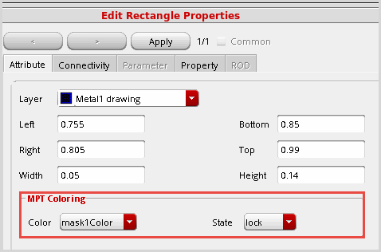

Methods to Change Color of Existing Shapes
There are several ways to change the color of shapes:
-
Use the Property Editor to change the color and color state of selected objects and vias in the canvas.

-
Use the Multiple Patterning Toolbar for the following:
-
Color Shifting shifts the color for unlocked shapes.
-
Color Locking locks and unlocks the color assigned to shapes.
-
Recolor Selected Colors updates color information for changed data or the entire design.
-
Removing Color from Shapes removes color by layer or for the entire design.
-
Use the multiple patterning color engine to color or recolor a design, as described in Coloring Methods.
Related Topics
Interactive Coloring in Layout
Visibility and Selectability of Colored Data
Colored Data Inspection
Color Locking
Color Shifting
Pre-defined Setup Driven MPT Flows
Using the Multiple Patterning Toolbar
Coloring Methods
Track-Based Coloring
Displaying Track Patterns in Layout
Assign Track Patterns to Netsh
Migrate from the Multiple Patterning Assistant
Limitations of Multi-Patterning Technology
Return to top